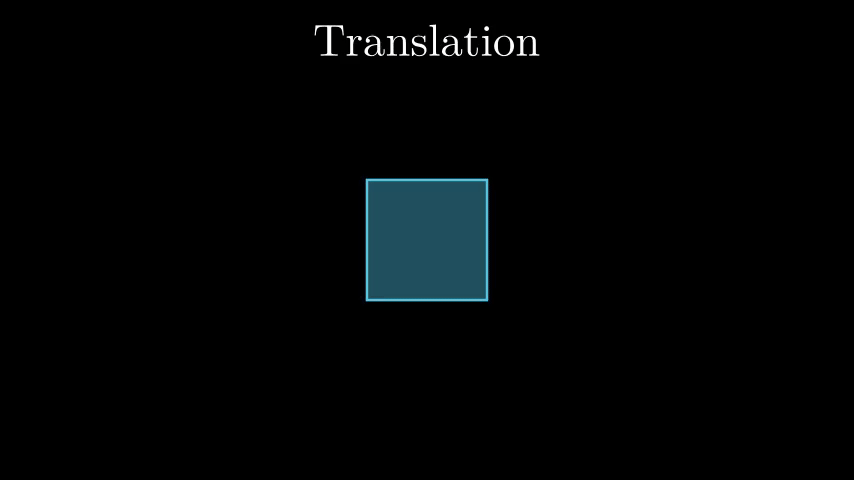

What are Transformations?
Transformations in computer graphics refer to the process of changing the position, size, or orientation of objects in a 2D or 3D space. Transformations are fundamental operations used to create various effects and animations in graphics applications.
Translation
Translation moves an object from one location to another by a fixed distance along a specified direction. It shifts the object horizontally and vertically in 2D graphics and can also be performed along the z-axis in 3D space.
Translation Example
Formula
For 2D translation:
NewX = X + Tx
NewY = Y + Ty
For 3D translation:
NewX = X + Tx
NewY = Y + Ty
NewZ = Z + Tz
Steps for Translation
- Specify the translation distance along the x, y, and z axes (Tx, Ty, Tz).
- For each point (X, Y, Z) to be translated:
- Calculate the new X-coordinate: NewX = X + Tx
- Calculate the new Y-coordinate: NewY = Y + Ty
- Calculate the new Z-coordinate: NewZ = Z + Tz (for 3D translation)